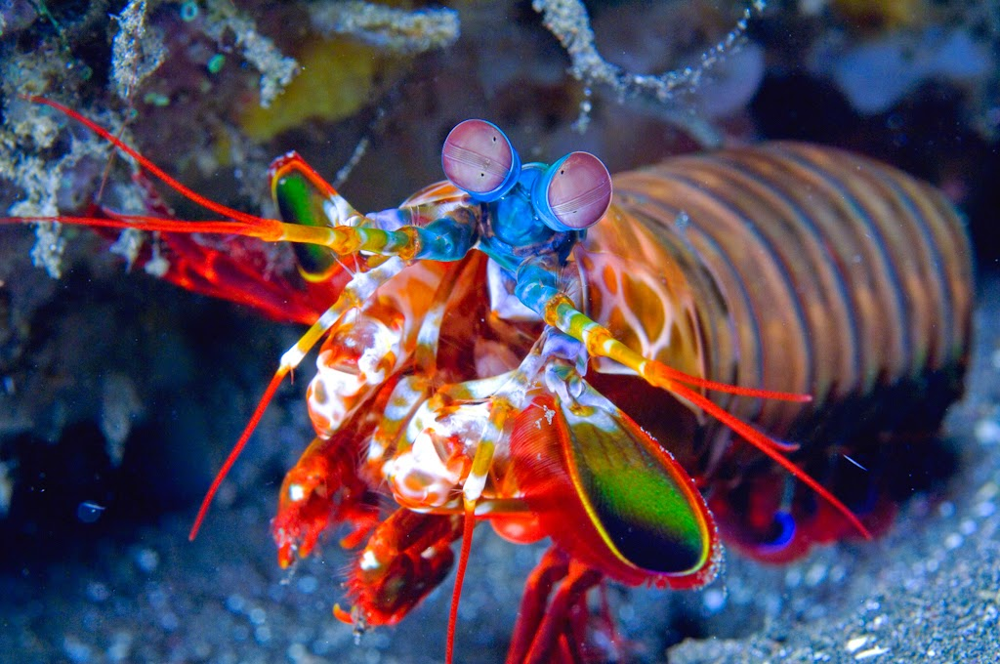
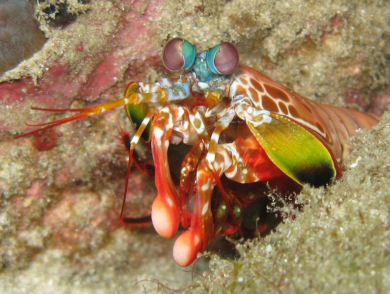

Fatos interessantes sobre o Stomatopoda
Fatos sobre o Stomatopoda
O pequeno poderoso!
Os olhos são testamentos da criatividade da evolução. Todos eles fazem as mesmas coisas básicas - detectam luz e a convertem em sinais elétricos - mas de uma variedade incrível de maneiras. Existem olhos simples e compostos, lentes bifocais e rochosas , espelhos e fibras ópticas . E há olhos que são tão estranhos, tão constantemente surpreendentes que, após décadas de pesquisa, os cientistas apenas descobriram como funcionam, quanto mais por que evoluíram dessa forma. Para encontrá-los, você precisa dar um mergulho.
Segue a Tabela sobre a classificação do Odontodactylus scyllarus
| Reino | Animalia | Filo | Arthropoda |
|---|---|
| Subfilo | Crustacea |
| Classe | Malacostraca |
| Subclasse | Hoplocarida |
Olho do Camarão

Este é o olho de um camarão mantis - um animal marinho que não é nem mantis nem camarão, mas um parente próximo de caranguejos e lagostas. É um olho composto, feito de milhares de pequenas unidades, cada uma detectando a luz de forma independente. Aqueles na faixa intermediária - a faixa central que você pode ver na foto - são especiais. São eles que permitem ao animal ver as cores. A maioria das pessoas tem três tipos de células de detecção de luz, ou fotorreceptores, que são sensíveis à luz vermelha, verde e azul. Mas o camarão mantis tem de 12 a 16 fotorreceptores diferentes em sua banda média. A maioria das pessoas presume que elas devem ser realmente boas em ver uma ampla gama de cores - uma “ bomba termonuclear de luz e beleza ”, como disse o Oatmeal. Mas no ano passado, Hanna Thoen da Universidade de Queensland descobriu que eles são muito piores em discriminar entre as cores eles são muito piores em discriminar entre as cores eles são muito piores em discriminar entre as cores que estão muito piorao discriminar cores, eles são muito piores em discriminar cores do que a maioria dos outros animais! Eles parecem usar seus mais de uma dúzia de receptores para reconhecer cores de uma maneira única que é muito diferente de outros animais, mas estranhamente semelhante a alguns satélites.
Receptor de UV
Aqui está uma analogia: digamos que você tenha uma grande multidão fazendo fila na frente de seis seguranças, cada um dos quais deve gritar quando avistar alguém com um nome específico. Um reconhece Adams, outro visa Bobs e assim por diante. Mas os guardas não são muito brilhantes; eles não reconheceriam Adam se ele se apresentasse. Então você torna o trabalho deles mais fácil. Você manipula o sistema de filas de modo que apenas Adams se alinhe na frente do guarda bloqueador de Adam, apenas Bobs alcançando o bloqueador de Bob e assim por diante. Os guardas gritam indiscriminadamente, mas ainda fazem seu trabalho corretamente. Eles não são específicos; você impõe especificidade a eles. Isso é exatamente o que acontece no olho do camarão mantis. Quando a luz entra nas unidades em seu olho, ela deve primeiro passar por um cone cristalino, que fica sobre os receptores. Bok descobriu que esses cones contêm substâncias bloqueadoras de UV chamadas MAAs (ou aminoácidos semelhantes à micosporina, na íntegra). Existem quatro, possivelmente cinco, que bloqueiam comprimentos de onda ligeiramente diferentes de UV. Combine esses filtros com as duas opsinas subjacentes e você terá seis classes diferentes de receptor de UV.